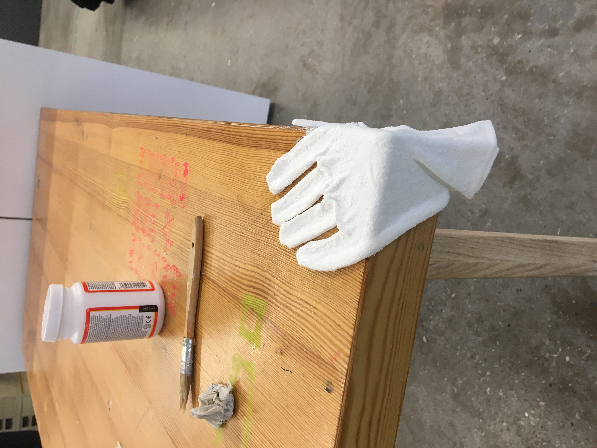
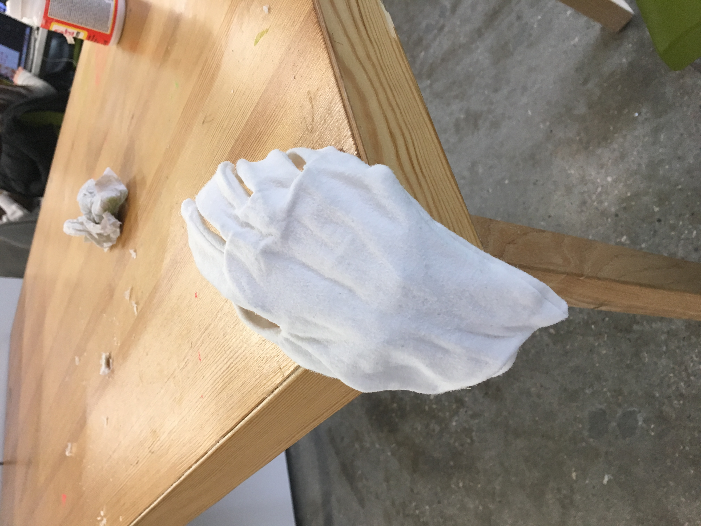
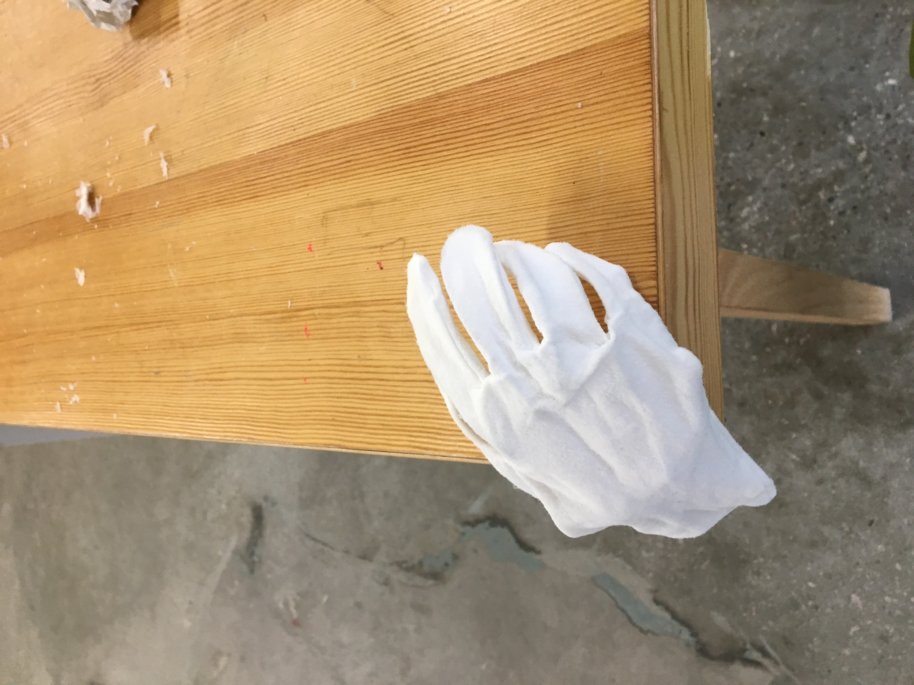
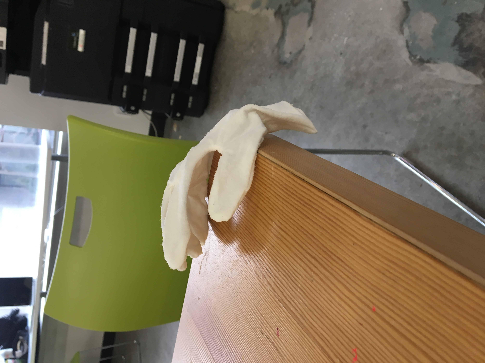
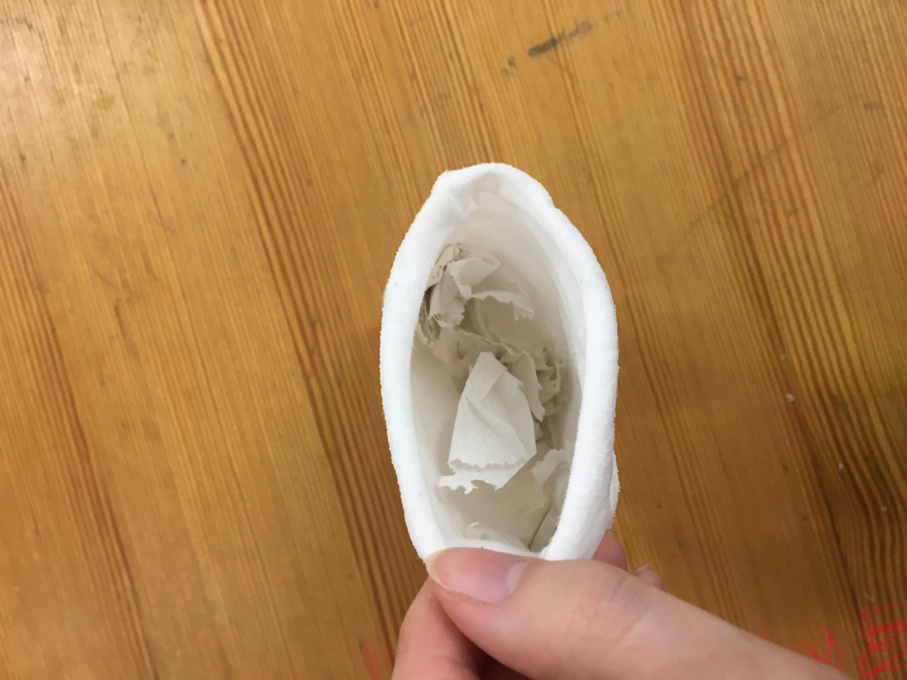
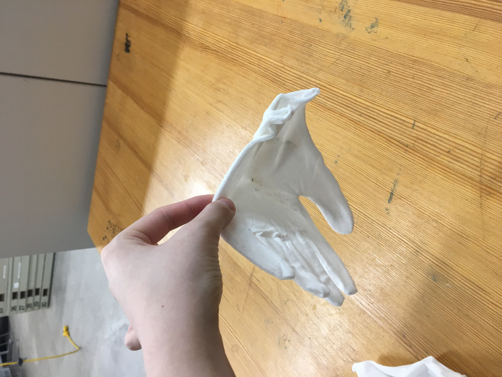
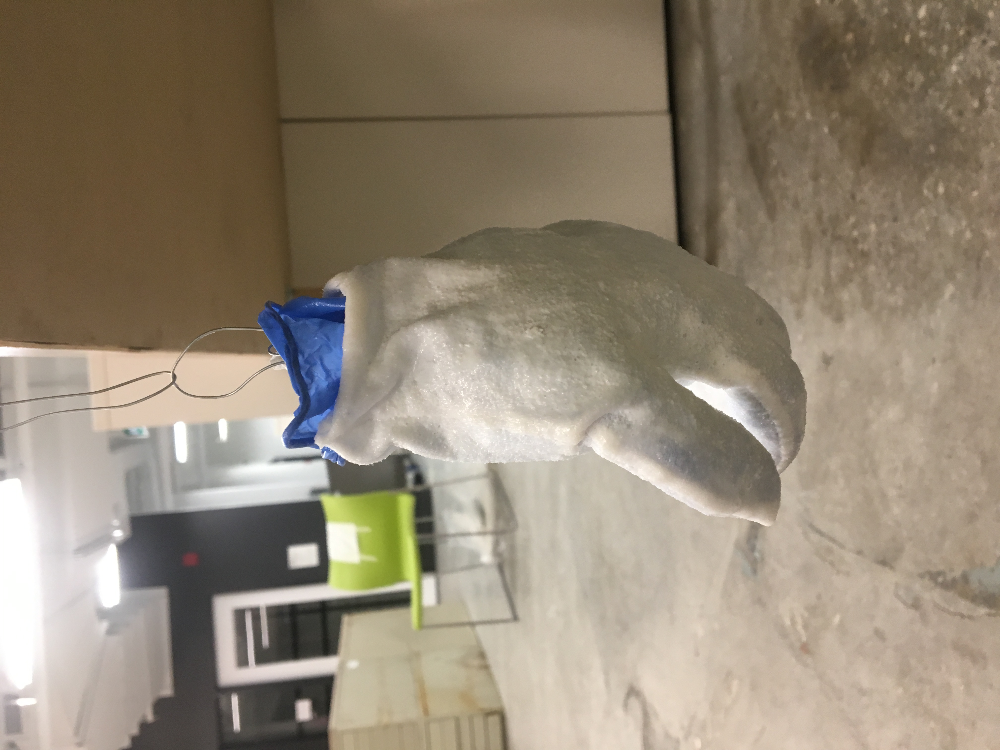
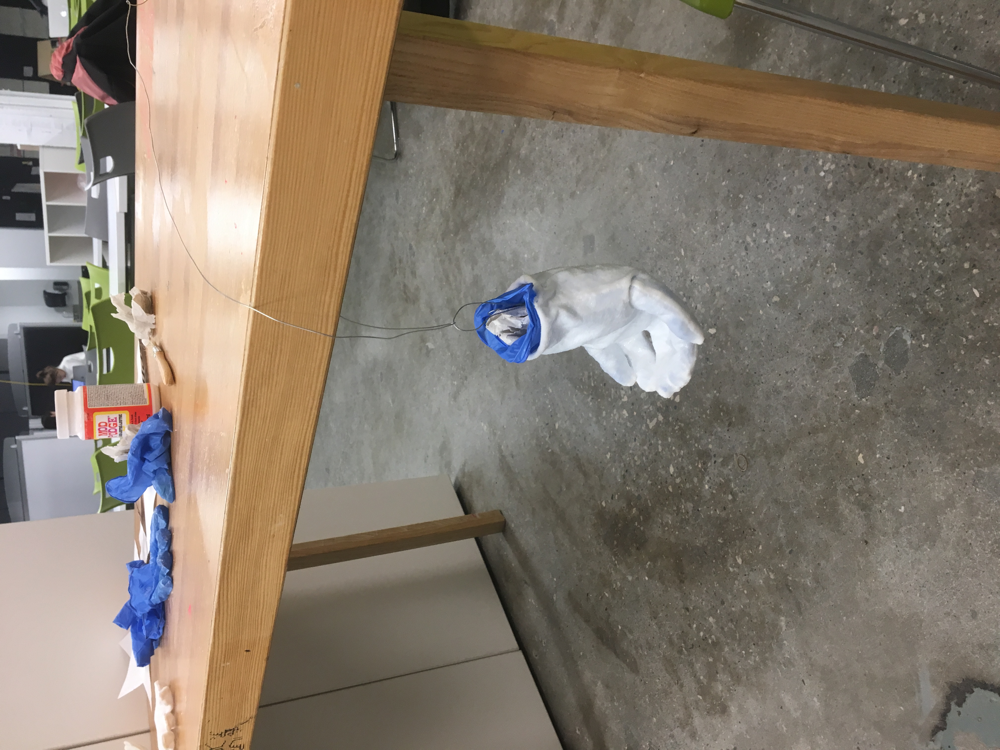

They beg to be touched, craft and process
Digital images.
A FEW OF THE MATERIAL TESTS that I made for my They beg to be touched project.¹ Looking at gate-keeping, what is ‘untouchable’, and the redundancy within institutional archival practices, these gloves are given a new purpose that removes their original function. I have yet to resolve this project and need to determine how the gloves need to be transformed into something ‘useless’, as well as figure out exactly what shape or form they will take. Currently, they are made from layers of Mod Podge sprayed with gloss varnish.
       1. The Archive, Section 04, Folder B.
ITEM CODE: 04.B.01.D